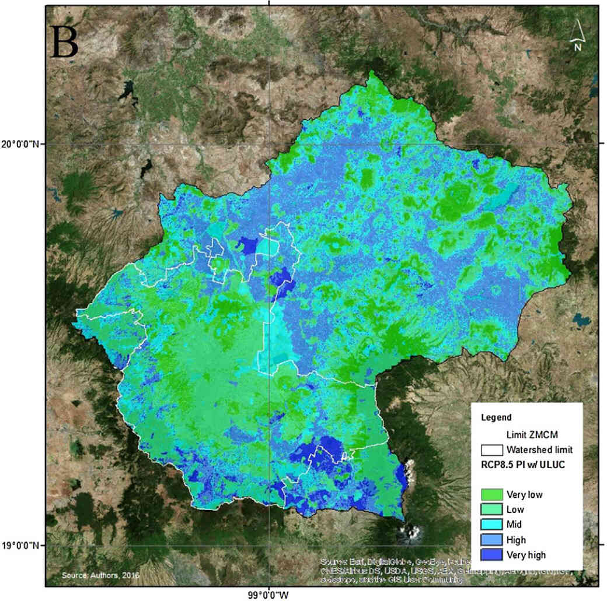

Desde la Ciencia y la Ecología Urbana
Home
About
Proyectos
Comunicación científica
Publicaciones
Contacto
Categories
All
(10)
Análisis espacial
(7)
App interactiva
(2)
Aves
(3)
Cambio climático
(2)
Ciencia de datos
(9)
Comportamiento
(1)
Dashboard
(3)
Ecología
(4)
Ecología Urbana
(5)
Invasión de especies
(2)
Machine learning
(1)
Manejo de fauna
(4)
Manejo de recursos
(1)
Manejo urbano
(6)
Región
(2)
Tablas dinamicas
(1)
Transporte urbano
(1)
Visualizacion
(2)
Áreas verdes
(2)
Proyectos
Monitoreo colectivo y masivo de especies invasoras
4 min
Desarrollamos un método y esquema para evaluar espacio-temporalmente invasiones biológicas con ciencia ciudadana e información de acceso libre.
Jun 1, 2023
La invasión ya estaba aquí cuando nací
4 min
El cambio climático y las especies invasoras son una de las principales amenzas a la vida silvestre. Ante ellas, ¿Las especies nativas pueden ajustar su comportamiento?.
Aug 17, 2022
Aves migratorias en área verdes de la CDMX
8 min
Las áreas verdes de las ciudades mexicanas reciben aves migratorias que llegan del norte del continenta a pasar el invierno. ¿Cuáles de sus características las fomentan?.
May 13, 2022
Análisis espacial del territorio de gatos por GPS
2 min
Proyecto en progreso. Seguimos de cerca a varios gatos con collares GPS en distintos contextos ambientales para entender como se desenvuelven en cada uno.
May 8, 2022
Los inviernos los paso en la ciudad
4 min
Con un planteamiento pionero, demostramos que las ciudades mexicanas ofrecen un hábitat de buena calidad para las aves migratorias que llegan en invierno.
Jan 17, 2022
Tendencias en el valor de criptomonedas
12 min
Información dinámica e interactiva sobre el valor de criptomonedas en un formato de tablero.
El tablero está en constante actualización
@Pachecovv
May 8, 2021
¿Qué inunda a la CDMX , su basura o su topografía?
3 min
Evaluamos las características que promueven las inundaciones en la CDMX, a través de datos públicos gubernamentales e información espacial.
Feb 24, 2018
Dashboard interactivo para explorar elecciones
1 min
Como prueba de concepto, esta aplicación permite explorar espacial y gráficamente votaciones electorales. ¡Prueba la app!
Nov 22, 2017
¿Quiénes son y a donde pedalean?
5 min
La información de Ecobici en CDMX permite explorar las principales rutas que toman los usuarios y la dinámica que tienen al usar el servicio. ¡Explóralo en la app!
Sep 17, 2017

Áreas de infiltración y anegación en ciudades latinoamericanas
3 min
Desarrollamos un innovador modelo espacial para evaluar la capacidad de infiltración y los riesgos de inundación en tres regiones urbanas latinoamericanas.
Mar 1, 2017
No matching items